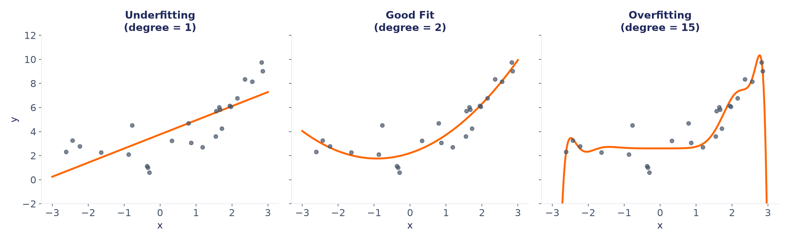
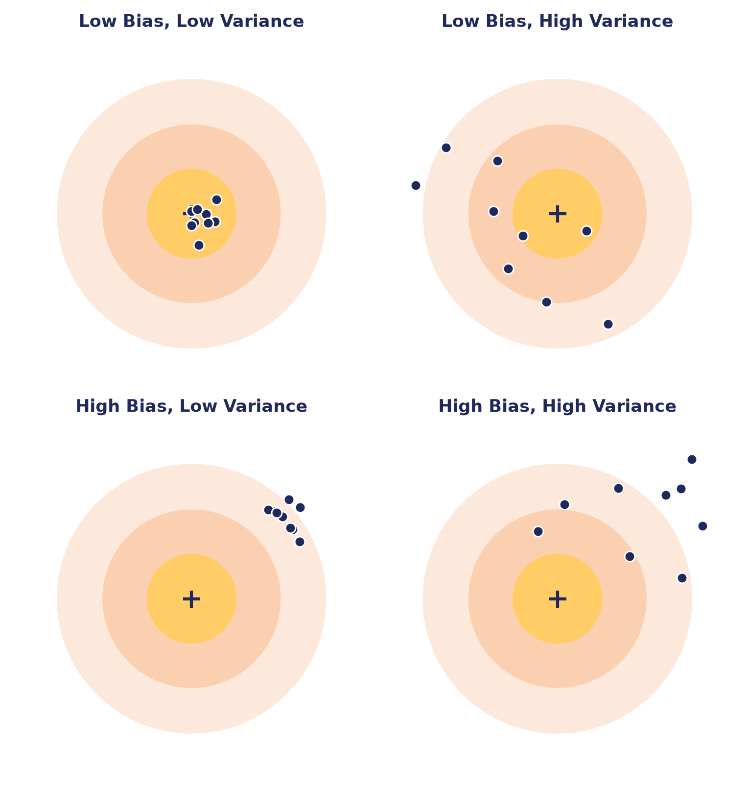
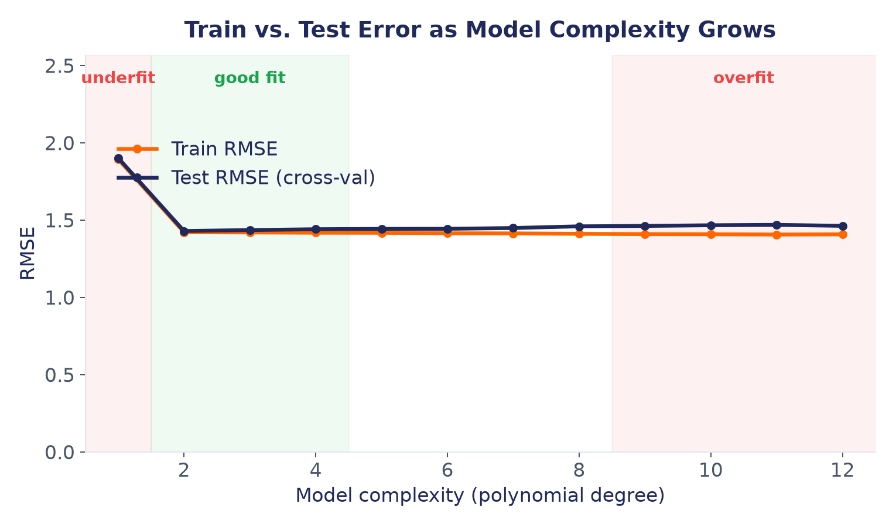
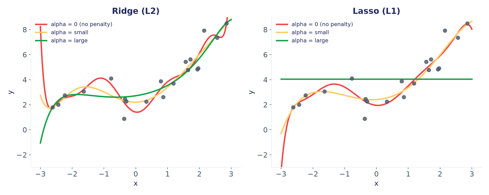

مدل فقط روی بخش Train آموزش میبیند؛ بخش Test کنار گذاشته میشود تا در پایان، فقط برای ارزیابی استفاده شود.



این جریمه با یک عدد به نام alpha کنترل میشود: هرچه alpha بزرگتر، فشار برای سادهماندن مدل بیشتر است.

بهجای امتحانکردن روی یک تقسیم ثابت train/test، دادهی آموزش را چند بار بهشکلهای مختلف تقسیم میکنیم و میانگین عملکرد را میگیریم.
هر دور، بخش دیگری برای اعتبارسنجی کنار گذاشته میشود؛ در پایان، میانگین ۵ نتیجه معیار قابلاعتمادتری است.
| Complexity | Diagnosis | Train error | Test error |
|---|---|---|---|
| Low | Underfitting | High | High |
| Just right | Good fit | Low | Low |
| High | Overfitting | Very low | High |
هدف، مدلی نیست که خطای Train صفر داشته باشد؛
هدف مدلی است که روی داده جدید هم خوب عمل کند.
این تعادل (نه خیلی ساده، نه خیلی پیچیده) قلب یادگیری ماشین است.